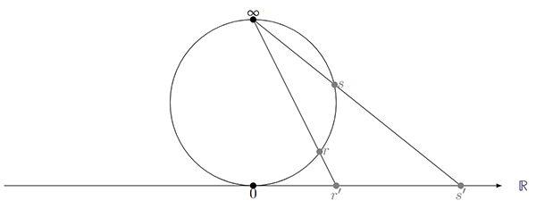

2022-05-02 by Alex Kampa Our second Maths Seminar note gives a detailed proof of the Weil reciprocity on the projective line.
A field \(\mathbb{k}\) can be extended by adding a “point at infinity”, denoted \(\infty\), and by defining the following arithmetic operations: \begin{equation} \begin{aligned} a \neq 0 \Rightarrow \begin{cases} \frac{\infty}{a} &= \infty \ a \cdot \infty &= \infty \ \frac{a}{0} &= \infty \end{cases} \hspace{1cm} a \neq \infty \Rightarrow \begin{cases} a \pm \infty &= \infty \ \frac{a}{\infty} &= 0 \ \end{cases} \end{aligned} \end{equation} In addition, we have \(\infty^0 = 1\). In this new structure, which allows division by \(0\), functions such as \(\frac{1}{x}\), as well as all fractions of polynomials, are defined everywhere, including at \(\infty\). However, this structure is not a field, as some operations are left undefined: \(\infty \pm \infty, 0 \cdot \infty, \frac{\infty}{\infty}\) and \(\frac{0}{0}\). Also, some functions that are defined everywhere on \(\mathbb{k}\) may not have a well defined value at \(\infty\). More formally, a \textbf{projective line} is a projective space of dimension 1. The projective line over a field \(\mathbb{k}\), with elements \(\mathbb{k} \cup \infty\), is usually denoted \(\mathbb{P}^1(\mathbb{k})\), \(\mathbb{P}_{\mathbb{k}}^1\), or simply \(\mathbb{P}^1\). An element \(a \neq \infty\) has homogeneous (or projective) coordinates \((a:1)\), while \(\infty\) has coordinates \((0:1)\).  The figure above shows a geometric interpretation of the projective real line \(\mathbb{P}^1(\mathbb{R})\), sometimes denoted \(\widehat{\mathbb{R}}\), which is homeomorphic to a circle. Every point on the circle, with the exception of the point at infinity, corresponds to a point on the real line. The two-dimensional version of this construction, \(\mathbb{P}^1(\mathbb{C})\), is called the Riemann sphere and is a model of the extended complex plane. In the context of finite fields, we generally do not have such neat geometric interpretations.
The set of rational functions on \(\mathbb{P}^1\), denoted \(\mathbb{k}(\mathbb{P}^1)\), are quotients of polynomials of the form \(r(x) = \frac{u(x)}{v(x)}\), where \(v(x) \neq 0\). The representation of rational functions is obviously not unique. In the following, we assume that the rational functions we will deal with are such that the nominator and denominator decompose to linear factors in \(\mathbb{k}\). This will be the case if \(\mathbb{k}\) is algebraically closed, or when \(\mathbb{k}\) is “large enough”. In that case, a rational function \(r(x)\) can be uniquely represented as: \begin{equation} r(x) = c_r \prod_i (x - r_i)^{\rho_i} \end{equation} where all \(r_i\) are distinct, \(\rho_i \in \mathbb{ZZ}^*\), and \(i\) ranges over some finite set \(I_r\). The sets \(\{ r_i \: | \: \rho_i > 0 \}\) and \(\{ r_i \: | \: \rho_i < 0 \}\) are, respectively, the sets of finite zeroes and finite poles of \(r(x)\). The degree of \(r\), which does not depend on the specific choice of \(u(x)\) and \(v(x)\), is: \begin{equation} deg® = \sum \rho_i = deg(u) - deg(v) \end{equation} Given a rational function \(r(x)\), a function \(r : \; \mathbb{P}^1 \mapsto \mathbb{P}^1\) can be defined in an obvious manner. \begin{equation} \begin{aligned} a \neq \infty \longmapsto \begin{cases} \infty \text{ if } a \text{ is a pole } \ r(a) \text{ otherwise } \end{cases} \; \; \infty \longmapsto \begin{cases} 0 \text{ if } deg® < 0 \ c_r \text{ if } deg® = 0 \ \infty \text{ if } deg® > 0 \end{cases} \end{aligned} \end{equation} We see that in addition to \(\{ r_i \}\), \(r\) can also have a zero or a pole at \(\infty\). The set of all zeroes and poles of \(r\) is called the support of \(r\) and denoted \(Supp(r)\) or \(S_r\). We define the \textbf{finite support} of \(r\), denoted \(S_r^*\), as \(S_r \backslash \{ \infty \}\). The order of a point relative to \(r\) is defined as follows: \begin{equation} \begin{aligned} ord_a® = \begin{cases} \rho_i \text{ if } a = ri \ 0 \text{ otherwise } \end{cases} \; \; ord{\infty}® = -deg® = - \sum \rhoi \end{aligned} \end{equation} Note that the order of a zero is always positive, while the order of a pole is always negative. As a result, it is clear that the sum of the orders, taken over all points of \(\mathbb{P}^1\), is \(0\): \begin{equation} \sum{a \in \mathbb{P}^1} orda® = \sum{a \in S_r} orda® = 0 \end{equation} Although we seem to be taking a sum over all the elements of \(\mathbb{P}^1\), which may not even be countable, this is not a problem as only a finite number of elements in this sum are non-zero. More precisely, this sum is just shorthand for the finite sum of these non-zero elements. A \textbf{divisor} \(D\) on \(\mathbb{P}^1\) is a formal sum of the form: \begin{equation} D = \sum{a \in \mathbb{P}^1} n_a [a] \end{equation} where \(n_a \in \mathbb{Z}\) and \(n_a \neq 0\) for only a finite number of elements of \(\mathbb{P}^1\). The set of points \(\{ a \: | \: n_a \neq 0 \}\), i.e. the points for which \(n_a\) is not zero, is called the \textbf{support} of \(D\) and denoted \(Supp(D)\). It can be helpful to think of a divisor as simply a finite set of pairs \(\{ (a_1, n_1), ..., (a_k, n_k) \} \in (\mathbb{k} \times \mathbb{Z}^*)^{<\omega}\), in which case \(\{a_1, ..., a_k \}\) is its support. Given the rational function \(r \in \mathbb{k}(\mathbb{P}^1)\), the \textbf{associated divisor} of \(r\) is: \begin{equation} \begin{aligned} div® &= \sum_{a \in \mathbb{P}^1} ord_a® [a] \ &= \sum_i \rho_i [ri] - deg®[\infty] \end{aligned} \end{equation} This definition is valid because the support of \(r\) is finite. Indeed, the supports of \(r\) and of \(div(r)\) are identical. Finally, given a divisor \(D\) whose support is disjoint from the support of \(r\), the \textbf{evaluation} of \(r\) at \(D\) is defined as: \begin{equation} r(D) = \prod{a \in \mathbb{P}^1} r(a)^{na} = \prod{a \in Supp(D)} r(a)^{n_a} \end{equation} The requirement that \(Supp(r) \; \cap \; Supp(D) = \varnothing\) means that when \(n_a \neq 0\), then \(r(a)\) is neither \(0\) nor \(\infty\). For all other points \(a \notin Supp(D)\) we have \(r(a)^{n_a} = r(a)^0 = 1\) so that these factors can be ignored. As a result, this product is well defined. For example, taking the canonical representation of \(r\), the above evaluation becomes (the product is for \(a \in S_D\)): \begin{equation} \begin{aligned} r(D) &= \prod_{a} r(a)^{na} \ &= \prod{a} ( c_r \prod_i (a - r_i)^{\rho_i} )^{na} \ &= \prod{a} ( c_r^{n_a} \prod_i (a - r_i)^{n_a \rho_i} ) \ &= c_r^{\sum na} \prod{a} \prod_i (a - r_i)^{n_a \rho_i} \end{aligned} \end{equation}
Theorem Let \(r,s \in \mathbb{k}(\mathbb{P}^1)\) be two rational functions with disjoint support, both of which can be decomposed to linear factors in \(\mathbb{k}\). Then \(r(div(s)) = s(div(r))\). Proof. We write \(r\) and \(s\) in their canonical form: \begin{equation} r(x) = c_r \prod_i (x - r_i)^{\rho_i} \hspace{1cm} s(x) = c_s \prod_j (x - s_j)^{\sigma_j} \end{equation} We therefore have: \begin{equation} \begin{aligned} div® = \sum_i \rho_i[r_i] - deg®[\infty] \hspace{1cm} div(s) = \sum_j \sigma_j[s_j] - deg(s)[\infty] \end{aligned} \end{equation} Applying formula \ref{for:Eval_r}, and remembering that \(deg(r) = \sum \rho_i\) and \(deg(s) = \sum \sigma_j\), we obtain: \begin{equation} \begin{aligned} r(div(s)) &= c_r^{\sum \sigma_j} \cdot \prod_j \prod_i (s_j - r_i)^{\sigma_j \rho_i} \cdot r(\infty)^{-deg(s)} \ &= \left( \frac{c_r}{r(\infty)} \right) ^{\sum \sigma_j} \cdot \prod_j \prod_i (s_j - r_i)^{\sigma_j \rho_i} \end{aligned} \end{equation} By symmetry, we get: \begin{equation} \begin{aligned} s(div®) &= \left( \frac{c_s}{s(\infty)} \right) ^{\sum \rho_i} \prod_i \prod_j (r_i - s_j)^{\rho_i \sigma_j} \end{aligned} \end{equation} The ratio between these two expressions is: \begin{equation} \begin{aligned} \frac{r(div(s))}{s(div®)} &= \left( \frac{c_r}{r(\infty)} \right) ^{\sum \sigma_j} \cdot \left( \frac{c_s}{s(\infty)} \right) ^{-\sum \rho_i} \cdot \prod_i \prod_j (-1)^{\rho_i \sigma_j} \ &= \left( \frac{c_r}{r(\infty)} \right) ^{\sum \sigma_j} \cdot \left( \frac{c_s}{s(\infty)} \right) ^{-\sum \rho_i} \cdot (-1)^{(\sum \rho_i)(\sum \sigma_j)} \end{aligned} \end{equation} Because \(r\) and \(s\) have disjoint supports, at least one of \(deg(r)\) and \(deg(s)\) must be equal to zero. If both are zero, the above ratio is obviously equal to 1. For the case where one of the degrees is non-zero, let’s assume wlog that \(deg(r) \neq 0\) and \(deg(s) = 0\). Because \(deg(s) = 0\) implies \(s(\infty) = c_s\), the ratio then becomes: \begin{equation} \begin{aligned} \frac{r(div(s))}{s(div®)} = \left( \frac{c_r}{r(\infty)} \right) ^0 \cdot \left( \frac{c_s}{c_s} \right) ^{-\sum \rho_i} \cdot (-1)^{(\sum \rho_i)\cdot 0} = 1 \cdot 1^{-\sum \rho_i} \cdot 1 = 1 \end{aligned} \end{equation} This completes the proof.
Let us define rational functions f, g and h via their divisors: \begin{equation} \begin{aligned} f(x) &: div(f) = [1] - [\infty] \ g(x) &: div(g) = [0] - 2[1] + [\infty] \ h(x) &: div(h) = [-1] - [0] \end{aligned} \end{equation} We can now directly obtain the divisors of proudcts or ratios of these functions: \begin{equation} \begin{aligned} div(fg) &= div(f) + div(g) &= & \; [0] - [1] \ div(f/g) &= div(f) - div(g) &= & \; -[0] +3[1] -2[\infty] \ div(f^2) &= 2 div(f) &= & \; 2[1] -2[\infty] \ \end{aligned} \end{equation} It is of course easy to see what form the functions f, g and h have: \begin{equation} \begin{aligned} f(x) &= c_f (x - 1) \ g(x) &= c_g \frac{x}{(x-1)^2} \ h(x) &= c_h \frac{x + 1}{x} \end{aligned} \end{equation} We can now verify that Weil reciprocity holds for the functions \(f^2\) and \(h\), whose supports are disjoint: \begin{equation} \begin{aligned} f^2(div(h)) &= f(-1)^{(2)(1)} f(o)^{(2)(-1)}) = (-2c_f)^2 (-c_f)^{-2} = 4 \ h(div(f^2)) &= h(1)^2 h(\infty)^{-2} = (2c_h)^2 (c_h)^{-2} = 4 \ \end{aligned} \end{equation}
Consider the following rational functions: \begin{equation} \begin{aligned} f(x) &= x^2 + 1 \ g(x) &= \frac{(x + 2)^2}{(x-1)^2} \end{aligned} \end{equation} Their divisors are: \begin{equation} \begin{aligned} div(f) &= [-i] + [i] - 2[\infty] \ div(g) &= 2[-2] - 2[1] \end{aligned} \end{equation} These divisors have distinct support. We can verify that Weil reciprocity holds (note that \(g(\infty) = 1)\): \begin{equation} \begin{aligned} f(div(g)) &= f(-2)^2 f(1)^{-2} = 5^2 2^{-2} = (5⁄2)^2 \ g(div(f)) &= g(-i) g(i) g(\infty)^{-2} \ &= \frac{((2+i)(2-i))^2}{((i+1)(1-i))^2} = \frac{(4 - i^2)^2}{(1 - i^2)^2} = (5⁄2)^2 \end{aligned} \end{equation} This example shows that when we are considering rational functions on the real projective line, the divisors have to be expressed in terms of all the roots of the polynomials under consideration, even if the roots are complex. If this is not done, the Weil reciprocity cannot be applied. This reflects the fact that the Weil reciprocity holds only on algebraically closed fields. □